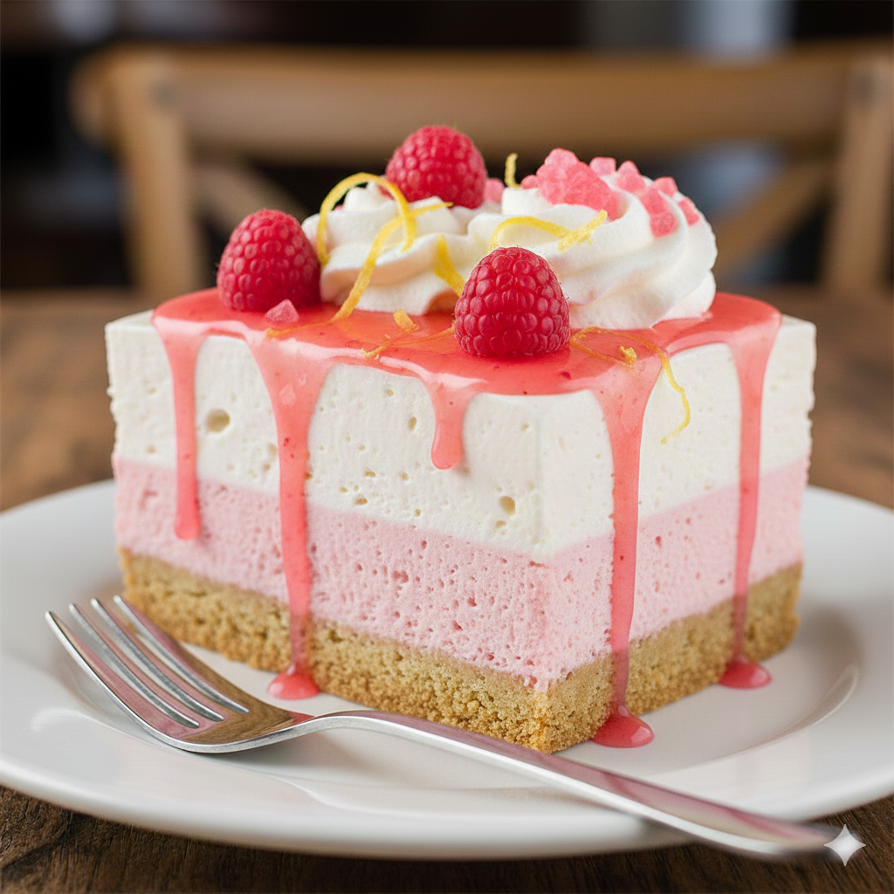

No-Bake Pink Lemonade Pie
Ingredients
| Ingredient | Amount |
|---|---|
| Golden Oreos | 20 |
| Salted butter (melted) | 4 tbsp |
| Milk | 1 cup |
| Instant vanilla pudding mix | 1 (3.4 oz) box |
| Pink lemonade concentrate (thawed) | 6 oz |
| Cool Whip (thawed) | 8 oz |
Instructions
- Crush Oreos and mix with melted butter; press into pie pan.
- Whisk milk and pudding mix until thickened.
- Stir in pink lemonade concentrate.
- Fold in Cool Whip until smooth.
- Pour mixture into crust and smooth top.
- Freeze 4 hours or until firm.